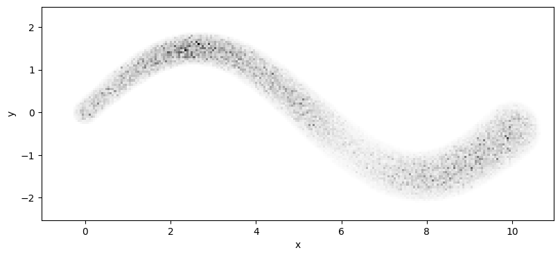
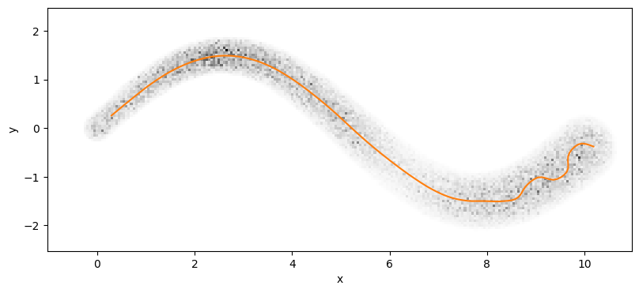
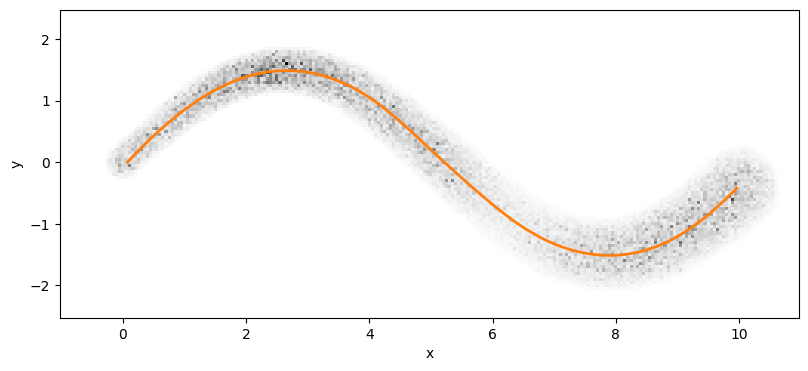
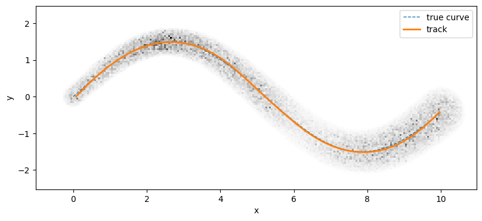

Fitting a Track Through a Density Image#

In this tutorial we fit a smooth track through an image of a wide, diffuse curve, like a probability map from a segmentation or a density map of a stellar stream. We draw the image ourselves as a band around a curve we know, so at the end we can see how close the track gets.
# On Colab, clone the repository, install the locked tutorial dependencies, and run
# from docs/tutorials. Elsewhere it does nothing: run from docs/tutorials with the
# `tutorials` extra.
import pathlib
import sys
repo = pathlib.Path("/content/phasecurvefit")
if "google.colab" in sys.modules:
%pip install -q uv
if not repo.exists():
!git clone -q --depth 1 https://github.com/GalacticDynamics/phasecurvefit {repo}
%cd {repo}
!uv export -q --frozen --extra tutorials --no-dev --no-editable --no-hashes -o r.txt
!uv pip install -q --system --python {sys.executable} -r r.txt
%cd docs/tutorials
import jax
import jax.numpy as jnp
import matplotlib.pyplot as plt
import numpy as np
from scipy.spatial import cKDTree
import phasecurvefit as pcf
Draw the image#
The image surrounds the curve \(y = 1.5 \sin(0.6 x)\). Its value is highest on the curve and falls to zero at the edge of the band, the band widens from left to right, and every pixel carries noise.
t = np.linspace(0.0, 10.0, 4000)
curve = np.stack([t, 1.5 * np.sin(0.6 * t)], axis=1) # the true curve
s = np.concatenate([[0.0], np.cumsum(np.linalg.norm(np.diff(curve, axis=0), axis=1))])
half_width = 0.3 + 0.4 * s / s[-1] # widens along the curve
along = (
1.0
+ 0.5 * np.exp(-0.5 * ((s - 0.25 * s[-1]) / 0.8) ** 2) # a brighter stretch
- 0.5 * np.exp(-0.5 * ((s - 0.65 * s[-1]) / 0.8) ** 2) # and a fainter one
)
pix = 0.05
gx, gy = np.meshgrid(np.arange(-1.0, 11.0, pix), np.arange(-2.5, 2.5, pix))
d_px, i = cKDTree(curve).query(np.stack([gx.ravel(), gy.ravel()], axis=1))
across = np.clip(1.0 - (d_px / half_width[i]) ** 2, 0.0, None) # 0 at the edge
noise = np.random.default_rng(0).lognormal(0.0, 0.3, d_px.size)
image = (along[i] * across * noise).reshape(gx.shape)
fig, ax = plt.subplots(figsize=(10, 4))
ax.pcolormesh(gx, gy, image, cmap="Greys", shading="auto")
ax.set(aspect="equal", xlabel="x", ylabel="y");

Turn the pixels into samples#
Each pixel with a positive value becomes a sample at its centre, weighted by that value. An image has no velocities, so we set them to zero.
keep = image.ravel() > 0
pos = {"x": jnp.asarray(gx.ravel()[keep]), "y": jnp.asarray(gy.ravel()[keep])}
vel = jax.tree.map(jnp.zeros_like, pos)
weights = jnp.asarray(image.ravel()[keep])
print(f"{int(keep.sum())} pixels")
5053 pixels
Order the pixels#
We order the pixels along the ridge of the image with a RidgeOrderer, then refine
that order with a self-organizing map. The map compares positions only, because the
velocities are zero.
orderer = pcf.orderers.RidgeOrderer() | pcf.orderers.SOMOrderer(
n_prototypes=30, metric=pcf.metrics.SpatialDistanceMetric(), n_epochs=30
)
ordering = pcf.order(pos, vel, orderer, weights=weights)
fig, ax = plt.subplots(figsize=(10, 4))
ax.pcolormesh(gx, gy, image, cmap="Greys", shading="auto")
ax.plot(ordering.backbone["x"], ordering.backbone["y"], c="C1", lw=1.5)
ax.set(aspect="equal", xlabel="x", ylabel="y");

Notice that the backbone follows the middle of the band, and that it wiggles near the right end, where the band is widest and noisiest. The next step smooths that out.
Fit the track#
The autoencoder turns the ordering into a smooth track. A band this wide needs two
training settings: the encoder frozen in the last training phase, and large batches.
The image is a mask around the curve, so we also tell it to find the ends from the
mask’s rounded caps. We draw the track over track_range, the range of \(\gamma\) it
covers.
model = pcf.nn.PathAutoencoder.make(
normalizer=pcf.nn.StandardScalerNormalizer(pos, vel),
gamma_range=ordering.gamma_range,
key=jax.random.key(0),
)
config = pcf.nn.TrainingConfig(
n_epochs_encoder=400,
freeze_encoder_final_training=True,
batch_size=1000,
track_ends="mask",
show_pbar=False,
)
fitted, _, _ = pcf.nn.train_autoencoder(
model, ordering, config=config, key=jax.random.key(1)
)
track = fitted(jnp.linspace(*fitted.track_range, 500))
fig, ax = plt.subplots(figsize=(10, 4))
ax.pcolormesh(gx, gy, image, cmap="Greys", shading="auto")
ax.plot(track["x"], track["y"], c="C1", lw=2)
ax.set(aspect="equal", xlabel="x", ylabel="y");

Notice that the wiggle is gone, and that the track stops near each end of the band.
Check the track#
We know the true curve, so we can measure how far the track is from it.
xy = np.stack([np.asarray(track["x"]), np.asarray(track["y"])], axis=1)
d = cKDTree(curve).query(xy)[0]
left, right = sorted(xy[[0, -1]], key=lambda p: p[0])
print(f"mean distance {d.mean():.3f}, largest {d.max():.3f}")
print(f"left end {np.linalg.norm(left - curve[0]):.2f} from the true left end")
print(f"right end {np.linalg.norm(right - curve[-1]):.2f} from the true right end")
fig, ax = plt.subplots(figsize=(10, 4))
ax.pcolormesh(gx, gy, image, cmap="Greys", shading="auto")
ax.plot(*curve.T, c="C0", lw=1, ls="--", label="true curve")
ax.plot(track["x"], track["y"], c="C1", lw=2, label="track")
ax.set(aspect="equal", xlabel="x", ylabel="y")
ax.legend(loc="upper right");
mean distance 0.017, largest 0.049
left end 0.07 from the true left end
right end 0.04 from the true right end

The track lies close to the curve along its whole length, and both ends stop within 0.1 of the ends of the curve.
Next steps#
Density fields explains why we ordered along the ridge, why a band this wide needed those training settings, and where the track ends.
Order a density field and train on an image or a wide curve cover each step on its own.